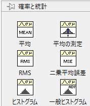
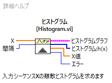
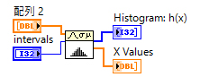
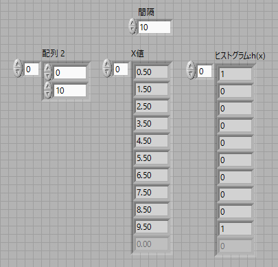
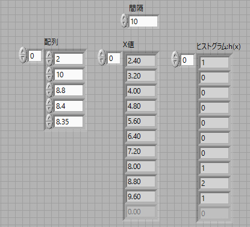
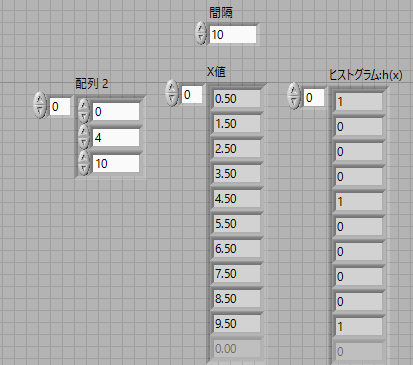
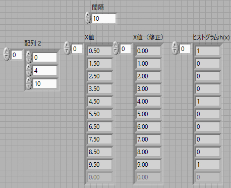
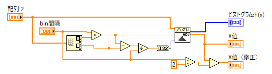
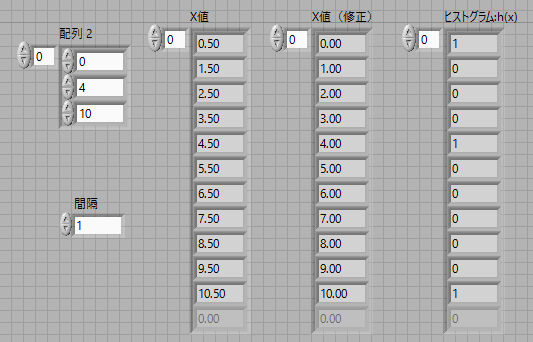

LabViewでのヒストグラムの表示法
もちろん，LabViewにヒストグラムのコマンドはあります．
数学 -> 確率と統計 -> ヒストグラム or 一般ヒストグラム
と言うように．

問題なのは，
binの間隔ではなく，binの本数でしか設定ができない
と言う点にあります．
ヘルプを見ると，

この，間隔，というところのヘルプを見ると，
間隔は0よりも大きくなければなりません。間隔が0以下の場合、ヒストグラムは未定義で、VIはヒストグラム: h(x)およびX値を空の配列に設定してエラーを返します。デフォルトは10です。
というようにその意味合いではなく，制限，しか書かれていません．
そこで，間隔（本数）ではなく，binの幅を設定できないか，考えてみました．
まずは，以下のようなプログラムを作成します．

０，と１０，という値の配列を作成し，実行すると，（間隔は１０）

と言う結果が出ます．つまり，結論から言うと，
X値（ヒストグラムのbinの幅） ＝ （最大値 － 最小値） ÷ 間隔
となるわけです．
もう少し複雑な配列で調べると，

となり，上記の式は正しいことがわかります （10-2）÷10 = 0.8．
しかし，X値の最初の値は，2.40，となっています．これはどのような関係なのでしょう?
結論から言うと，
X値の初期値 ＝ X値 ÷ ２ ＋ 最小値
であることがわかります．ですので，binの幅を指定するには，
間隔 ＝ （最大値 － 最小値） ÷ X値（ヒストグラムのbinの幅）
を計算して，ヒストグラムのコマンドに入力すればよいことがわかります．
また，どのbinにカウントするか，ですが，上の図を見てもらえればよいと思いますが，
8.8の値 → 8.8のbin
8.4の値 → 8.8のbin
8.3.5の値 → 8.0のbin
となっています．従って，binの表示の意味は，
8.8 ： 8.4以上，9.2未満
に入ることになり，
Xi - binの幅/2 <= data < Xi+1 + binの幅/2
と言うことになるかと思います．
X値が整数であったり，自然数であったり，と言う離散的な場合には，どう対応しましょう．
たとえば，サイコロを振った回数，など．
先ほどと同様な計算を行うと（配列の値をちょっと変えていますが）

と言うようになるわけです．
なので，X値からbinの幅の半分を引けばよい訳なので，

となります．．．．．が！
なんと最後のbinが９です．データは１０まであるのに．．．．
まあ，気にしなくてもいい，という考えもありますが．．．．きちんと行うためには，
一般ヒストグラム
で，最大値，最小値を指定する方法がよいかと思います．
以下が，一般ヒストグラムを用いた方法です．


このようにきれいにカウントできていることがわかります．